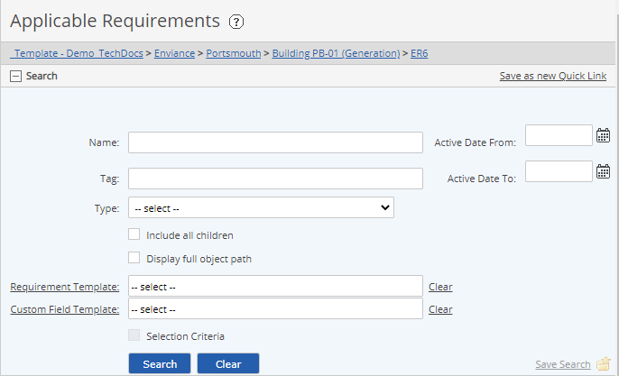

An expandable Search function is available from most areas of the system. To use the search function (search for requirements, documents, tasks, etc.), simply click on the plus sign (+) in the Search bar to expand the search pane.
The search may be initiated from any object in the System Model tree to search for those requirements or objects that are part of that section.
Each time you perform a search, the search criteria for that object type is saved. Next time you perform the same operation, the previous search criteria is used. If you do not see the expected results, check the search criteria and use Clear to clear the search criteria or reset the criteria as desired.
To search for objects:
In the System Model tree, select the parent object from which you want to start the search.
To search the entire system, select Locations & Programs or select the specific Facility/Program, Unit/Element or POI to search just that section of the model.
Click the plus sign (+) in the Search title bar. The Search section expands to display the available search criteria.
Set the search criteria in the Search section, using just those search criteria you want to include.
Check Include all children to include objects at all levels below the selected object.
Check Display full object path to display the full path of the object. This is useful if you are searching for objects that have the same name at different locations.
To filter for objects by name, enter either the full or partial name in the Name field.
To filter by Type, choose any System Model object or requirement type.
Filter for objects that share the same Requirement Template or Custom Field Template by choosing the template from the list.
Check the Selection Criteria box if you want to filter by field values on a requirement template or custom template. You may then choose an attribute and a value to filter for.
Select Search.

If no results are returned from the search, be sure you have checked Include all children, and that the search is initiated from the appropriate section of the tree.
Bulk operations for multiple objects are available by selecting the checkboxes, then right click to display a menu with options.